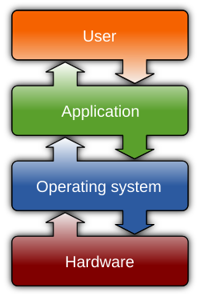

Operating Systems are the core of what makes computers functional for users. They are system mounted software which manages computer hardware and software resources while also acting as the middle man between the user and any applications or physical devices being used on the computer. Your operating system determines what program gets what memory and when, and helps prevent software from accessing memory or resources it does not need. Additionally it helps manage security permissions for users, devices, and software. It can be difficult to exactly define an operating system in few words, but the best comparison is probably a "manager" or "director" of your computer.
Although there are a great deal of OSes or OS variations out there, a handful of them dominate the market. Namely Android, Windows, IOS, macOS and Linux are the most commonly used options, but other options do exist even if they're not popular.